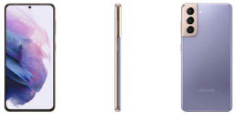

Park Gyeol
/ student
자기소개
취미
활동
SNS
GALAXY S3
GALAXY S4
GALAXY S5
GALAXY S6
GALAXY S7
GALAXY S8
GALAXY S9
GALAXY S10
GALAXY S20
GALAXY S21
GALAXY S21
 작년 갤럭시S20에서 디자인적 혹평을 받은 뒤에 디자인을 신경 써서 나온 갤럭시S21이 출시되었습니다.
사양은 엑시노스가 돌와서 엑시노스 2100, 최대 16GB 램, 6.8인치의 최대 1500 nit까지 지원하는 디스플레이, 5000mAh의 배터리 등이 있습니다.
스펙시트에서 가장 눈에 띄는 점은 와콤 입력 모듈이 탑재되었다는 것이 있었습니다.
갤럭시 z 폴드 이후 노트의 단종이 꾸준히 기사화되고 있었는데 이번 년에 노트 안 나온다는 오피셜이 있었습니다.
그래서인지 s 시리즈에 와콤 펜을 지원되었지만 펜을 수납할 수 있는 공간은 없었습니다.
또 다른 특징으로는 디스플레이의 색조 표현력이 향상되어 DCI-P3 기준을 충족했습니다.
또한 지문인식 센서가 온 스크린 지문인식이 되면서 초음파 센서로 변경이 되었는데
지문인식 속도가 느리다는 지적을 꾸준히 받고 있었는데 이번 갤럭시S21에서 개선이 되었습니다.
디자인은 전작에서 워낙 많은 비판을 받았기 때문에 이번에는 꽤나 호평이 많았고 실제로 봤을 때도 예뻤습니다.
갤럭시S21과 21+의 경우에는 디자인과 그립감을 제외하면 호불호가 매우 많이 갈렸던 엣지 디스플레이가 빠졌기 때문에
이 부분이 싫어서 갤럭시를 안 샀던 분들에게 어필이 될 것 같습니다.
갤럭시S21을 홍보할 때 포인트는 안드로이드 최고의 바형 스마트폰이다라는 점이 가장 클 것 같습니다.
사실 갤럭시 z 시리즈를 삼성이 밀기 시작해서 s 시리즈와 노트 시리즈에 힘을 많이 뺀 느낌인데 여전히 안드로이드 최고 수준은 유지하고 있다고 생각합니다.
디자인적으로도 충분히 예쁘고 전작보다 가격 또한 싸졌으니 충분히 메리트가 있다고 생각합니다.